釜山珍寺大作戦
五郎台（オランデ）
龍宮寺の近くにある五郎台（オランデ）は海沿いの祈祷場である。
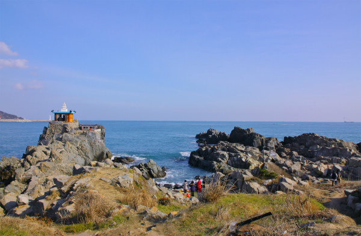
海に突き出した岩の上に小さなお堂が建っている。
傍目に見ればそれだけの場所なのだが、結構人が多い。
駐車場には車が多く停まり、食べ物や縁起グッズを売る屋台などもちらほら。
思いのほか人気スポットのようだ。ご利益がある、ということなのか。
それとも韓国版パワースポット、なのか。
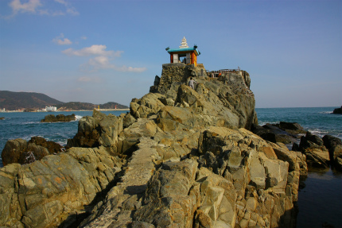
お堂は岩山の上に建ち、見晴台のようだ。
五郎台、という地名はとある人物を追ってきた5人の侍郎があまりの景色の美しさにここで過ごした、という故事に由来するそうな。
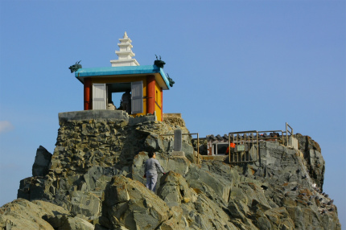
そこまで際立って美しい風景とは思えないが、のんびりとした雰囲気はある。
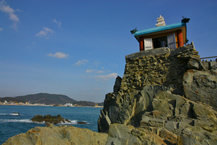
お堂の隣にはロウソク専用のお堂。
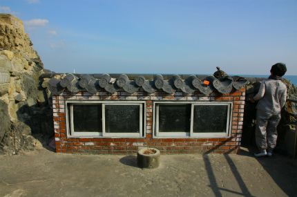
海風が強く、露天ではすぐ火が消えてしまうのだろう。
ぶっといロウソクが何本も奉納されていた。
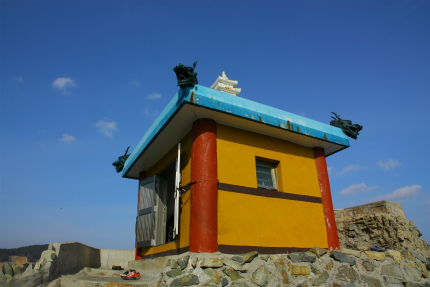
で、お堂。
お堂は非常に小さく、2～3人も入れば満員御礼となろうサイズ。
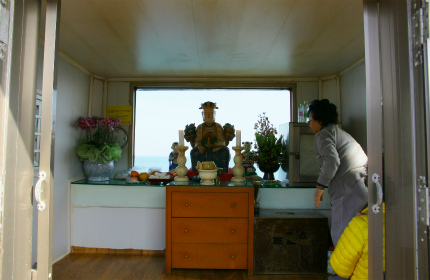
シンプルな祭壇には龍神が安置されていた。もちろん海を司る神である。
龍神の背後には窓があり、海が見渡せるという按配。
てなわけで五郎台、参拝終了！
…な、わけではない。
実はココ、お堂の手前の岩が凄い事になっているのだ。
よーく、ご覧いただきたい。
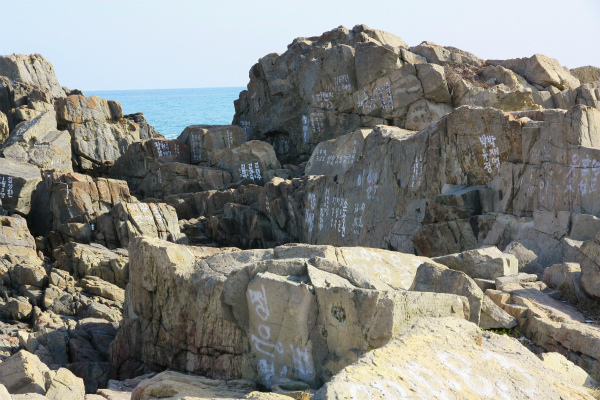
見渡す限り岩に文字が書き込まれまくり。
白ペンキでハングルがびっしりと。
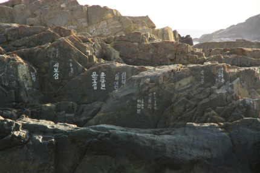
センテンスが短いので健康祈願、とか商売繁盛、といった短い願い事が書いてあるのか…それとも何かのマジナイなのか、呪文なのか…
…と思ったら名前だそうです。
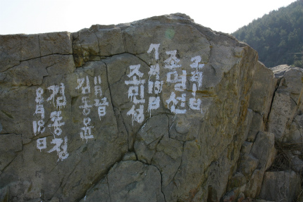
参拝に来た日と名前が書かれているのだ。
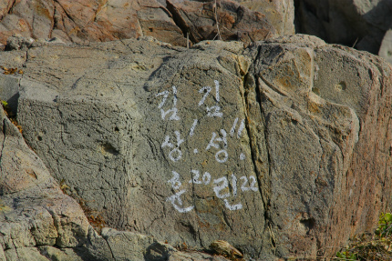
こんな凄いモジダラケ空間なのにまるでゴルゴ13のように眉一つ動かさず釣りをしている太公望がいた。
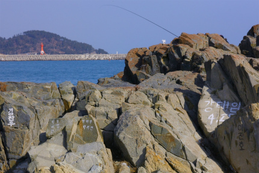
地元の人にしてみれば見慣れた光景なのかも知れないが、こっちにしてみりゃ違和感アリアリです。
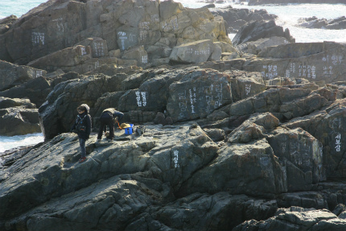
そんな海岸の一画が何やらにぎやかだ。
いわゆる民間信仰の祈祷をやっているようだ。
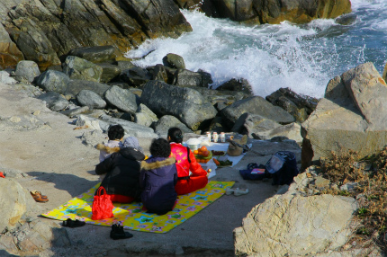
韓国の民間信仰では「クッ」と呼ばれる巫者による神託が盛んだ。
これはまさにその光景である。
一番海寄りのマッカッカのお召し物の女性が巫女。
日本の民間信仰の巫女同様、独特の節回しでお経なのか祭文なのか唄なのか、を唱えている。
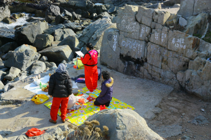
韓国の民間信仰に疎いので詳らかなことは述べられないが、シャーマニックな神との交信から現世利益を得るという点では東アジア全域に分布している仏教＋地元の民族信仰（例えば日本では神道、中国では道教）がベースの信仰形態と考えられる。
そして日本同様、巫者は圧倒的に女性が多いという。
もちろんクッという一言だけで言い表せない様々な民間信仰の諸相はある。
地域差もあるし、青森のイタコとカミサマのように職能や世襲など様々なファクターでカテゴライズされている。
詳しくは 굿 ←この文字を動画サイトなどにぶち込んでみてね。包丁の上でダンス！とかあるから。
その辺は今後の課題、ということで今はこの赤on赤の巫女の姿を目に焼き付けようではないか。
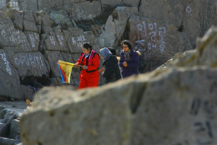
チョット横から拝見しますよ、っと。
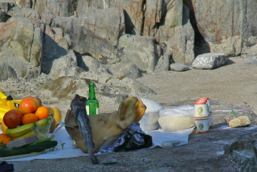
っと、供え物が目の前に。
供え物には欠かせない豚の顔、米、魚（オコゼ？）果物等々…
ちなみに豚の顔の向こう側にあるグリーンの瓶は焼酎。韓国ではソジュといって釜山滞在中は毎日お世話になってました…
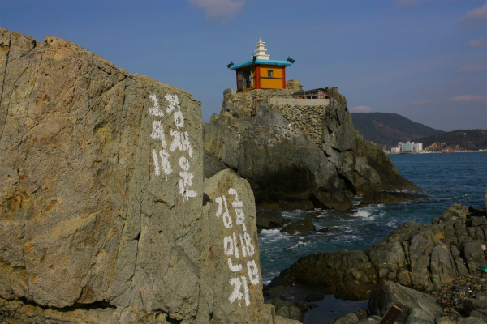
韓国中のカニが集まるといわれるカニの街、機張（キジャン）はこの少し先。
もしかしたら機張でカニを食べた帰りの立ち寄り＆腹ごなしスポットなのかもしれない。
この周辺にも海鮮料理を出すと思しきレストラン）がたくさんあった。
次の修行へGO！
釜山珍寺大作戦
珍寺大道場 HOME